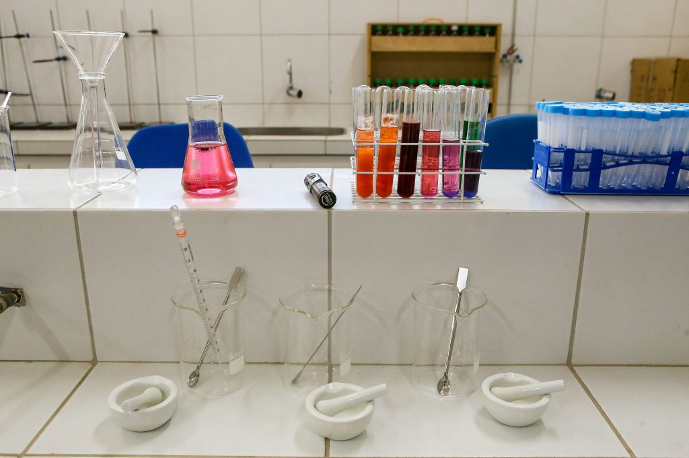

A E.E. Dom João Nery é uma escola pública estadual localizada no Jardim Chapadão, em Campinas (SP). Oferece ensino focado no desenvolvimento dos estudantes e na preparação para vestibulares.

📍 Endereço: R. Erasmo Braga, 555 - Bonfim, Campinas - SP, 13073-470
📞 (19) 3241-6891
✉ secretaria.nery1932@hotmail.com